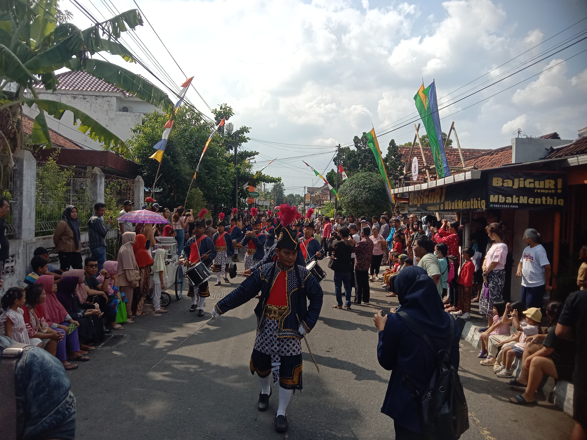
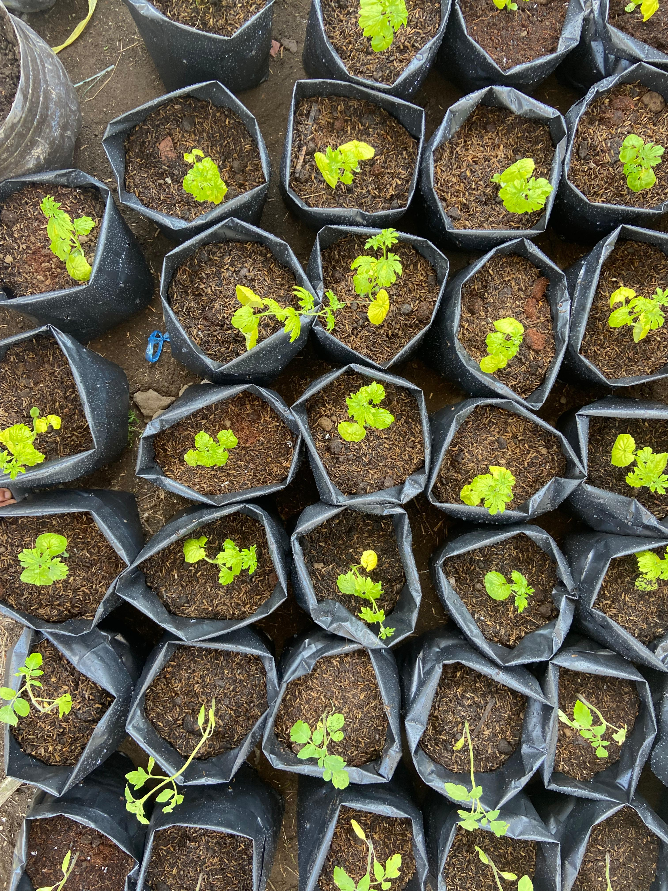
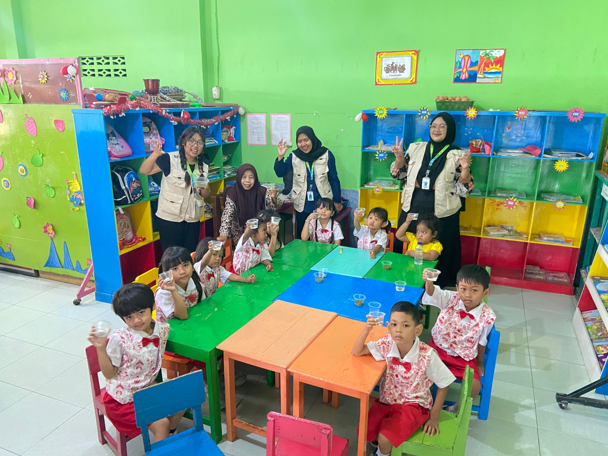
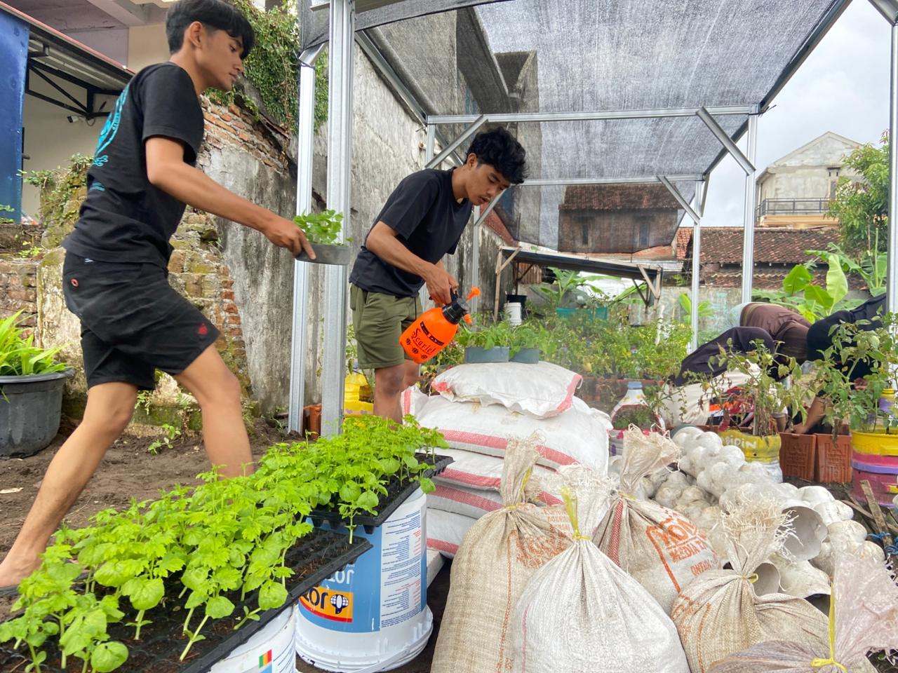
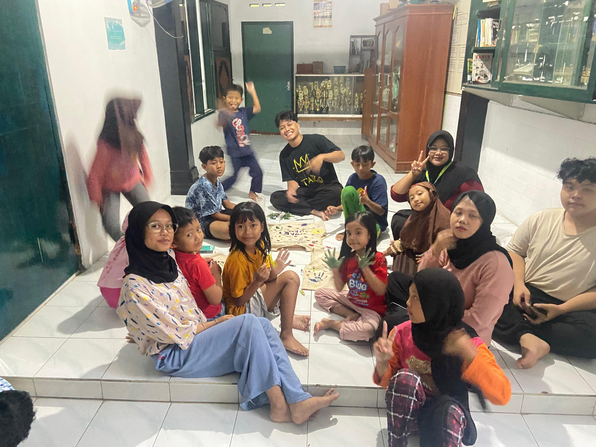
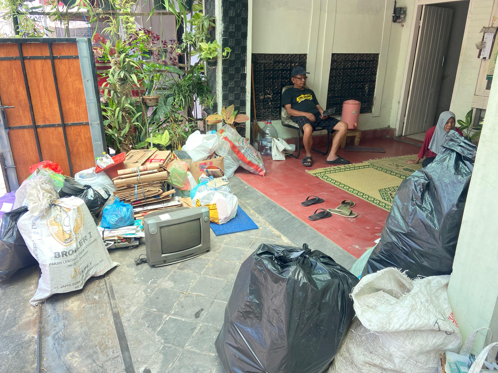
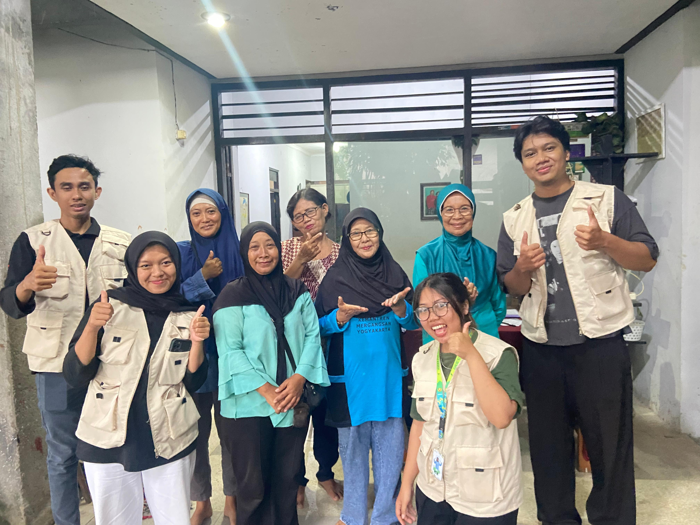

Kenduri Suro
Kenduri Suro adalah upacara adat tahunan di Keparakan Lor yang diselenggarakan saat bulan Suro sebagai wujud rasa syukur, persatuan, dan pelestarian budaya melalui arak-arakan gunungan.
Website resmi Keparakan Lor, Kemantren Mergangsan, Kota Yogyakarta. Media komunikasi, informasi publik, kepada seluruh warga.
Melalui laman ini, warga dapat mengakses profil wilayah, data demografi, agenda kegiatan, berita dan informasi seputar masyarakat kampung keparakan lor.
Profil Keparakan LorKeparakan Lor mengembangkan potensi kuliner lokal sebagai daya tarik ekonomi kreatif...
Warga kini dapat mengajukan surat domisili, usaha kecil, dan pengantar RT/RW secara online...
Pemeriksaan kesehatan ibu-anak dan sosialisasi pencegahan DBD.
Pemilahan sampah rumah tangga untuk nilai ekonomi dan lingkungan bersih...
Urban Farming Keparakan Lor adalah gerakan warga untuk memanfaatkan lahan sempit (pekarangan, lorong gang, rooftop) menjadi kebun sayur, toga (tanaman obat keluarga), dan tanaman produktif lain. Tujuannya adalah kemandirian pangan keluarga, edukasi generasi muda, dan lingkungan yang lebih hijau.
Kegiatan ini dikelola gotong royong oleh warga, ibu-ibu PKK, karang taruna, dan kelompok hijau kampung. Hasil panen sebagian digunakan untuk konsumsi rumah tangga, sebagian lagi dijual sebagai dukungan ekonomi warga.





